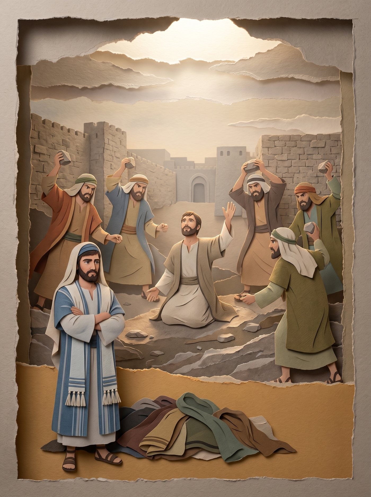
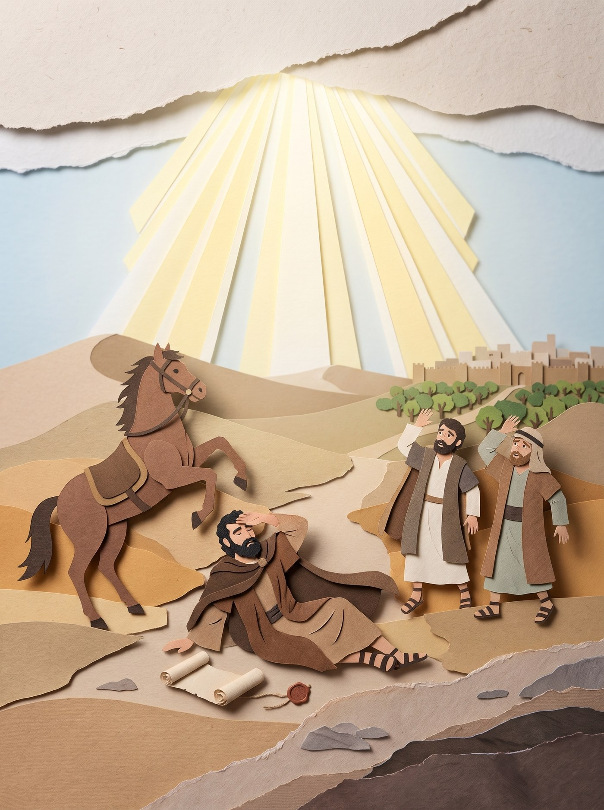
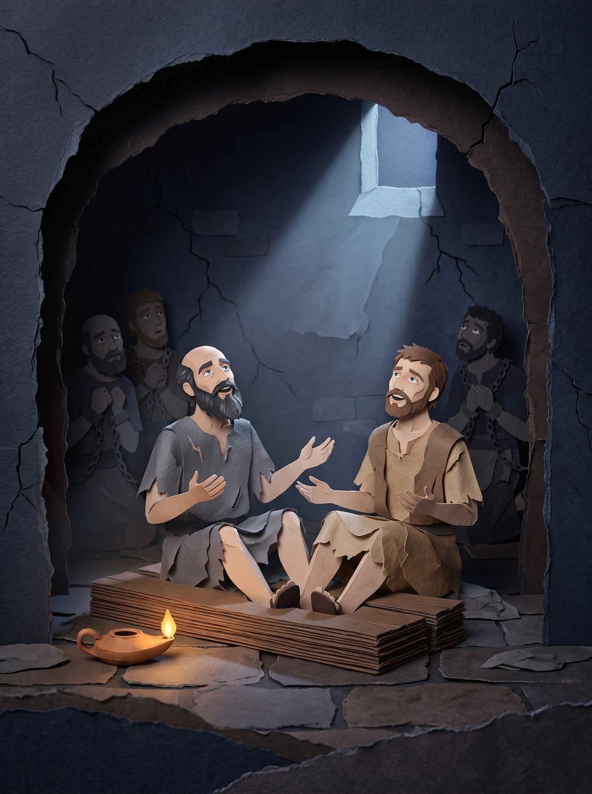

Capítulo 12
Pablo: de perseguidor a apóstol
Parte II: el cumplimiento · Hechos 2, 7–9, 16, 27–28; Gálatas 1; 2 Corintios 11; Romanos
La escena
Recreación: así pudo haber sido. Los hechos están en el libro de los Hechos y en las cartas de Pablo. Lo que pensaban y sentían se imagina a partir del texto y de lo que se sabe de la época.
Cincuenta días después
Siete semanas después de aquella Pascua, Jerusalén vuelve a estar llena. Es la fiesta de Pentecostés, la de la cosecha. Otra vez hay peregrinos de todas partes: de Persia, de Mesopotamia, de Egipto, de Libia, de Roma, de Creta, de Arabia. Cada uno con su idioma.
Los discípulos de Jesús, unos ciento veinte, están juntos en una casa. Ya lo vieron resucitado. Ya lo vieron subir al cielo. Y están esperando lo que Él les prometió.
«Y de repente vino del cielo un estruendo como de un viento recio que soplaba, el cual llenó toda la casa donde estaban sentados; y se les aparecieron lenguas repartidas, como de fuego, asentándose sobre cada uno de ellos» (Hch 2:2-3).
Salen a la calle. Y empiezan a hablar. Y la multitud de extranjeros se queda pasmada, porque «cada uno les oía hablar en su propia lengua» (Hch 2:6). Galileos sin estudios hablando en persa, en egipcio, en latín.
Muchos siglos antes, en Babel, el capítulo 11 del Génesis, los hombres quisieron llegar al cielo con una torre, y Dios confundió su idioma y los dispersó. Ahora, en Jerusalén, Dios baja del cielo y hace que todos se entiendan. Lo que Babel separó, Pentecostés lo vuelve a juntar.
Y Pedro, el mismo Pedro que unas semanas antes negaba a Jesús delante de una sirvienta junto a unas brasas, se para frente a miles de personas y les dice que esto es lo que había anunciado el profeta Joel: «Derramaré de mi Espíritu sobre toda carne» (Hch 2:17). Les habla de Jesús, al que ellos crucificaron y Dios resucitó. Y la gente, con el corazón partido, le pregunta qué tienen que hacer.
«Pedro les dijo: Arrepentíos, y bautícese cada uno de vosotros en el nombre de Jesucristo para perdón de los pecados» (Hch 2:38).
Para perdón de los pecados. El mismo hilo. Ese día se suman unas tres mil personas.
Un joven llamado Saulo
Entre los que no se sumaron había un joven brillante. Se llamaba Saulo. Había nacido en Tarso, una ciudad rica de la costa sur de lo que hoy es Turquía, en una familia judía muy estricta, de la tribu de Benjamín, como el rey Saúl, de quien llevaba el nombre. Y además tenía algo que muy pocos judíos tenían: era ciudadano romano de nacimiento (Hch 22:28).
Lo mandaron a Jerusalén a estudiar con Gamaliel, el maestro más respetado de su tiempo. Saulo era fariseo, sabía la ley de memoria, y la amaba. Y por eso mismo odiaba a los seguidores de Jesús. Para él era intolerable que dijeran que un hombre colgado de un madero, un maldito según la ley, era el Mesías.
Y un día lo ve todo de cerca.
Esteban
Esteban era uno de los primeros cristianos, un hombre lleno de fe que servía a las viudas pobres de la comunidad. Lo acusan de blasfemia y lo llevan ante el mismo tribunal que condenó a Jesús. Y Esteban, en vez de defenderse, les cuenta toda la historia. Toda.
«El Dios de la gloria apareció a nuestro padre Abraham, estando en Mesopotamia, antes que morase en Harán» (Hch 7:2).
Y sigue. Abraham. Isaac. Jacob. José, vendido por sus hermanos y después su salvador. Moisés, rechazado por su pueblo, y después el que los sacó de Egipto. David. Salomón y el templo. Es como si les contara este libro. Y al final les dice que siempre hicieron lo mismo: rechazaron a los que Dios les mandaba. Y ahora mataron al Justo.
Saulo está ahí. Escuchando cada palabra.
Los del tribunal se enfurecen. Rechinan los dientes. Y Esteban levanta la mirada:
«He aquí, veo los cielos abiertos, y al Hijo del Hombre que está a la diestra de Dios» (Hch 7:56).
Se tapan los oídos, gritan, se le tiran encima, lo arrastran fuera de la ciudad y lo apedrean. «Y los testigos pusieron sus ropas a los pies de un joven que se llamaba Saulo» (Hch 7:58).
Saulo cuida los mantos de los que tiran las piedras. Y ve morir a Esteban. Y escucha lo último que dice, de rodillas, con la cara llena de sangre:
«Señor, no les tomes en cuenta este pecado» (Hch 7:60).
Las mismas palabras de Jesús en la cruz. Perdónalos.
«Y Saulo consentía en su muerte» (Hch 8:1).
Pero quizás algo se le quedó clavado por dentro. Esa cara. Esa paz. Ese perdón.

El camino a Damasco
Después de Esteban, Saulo se vuelve implacable. «Y Saulo asolaba la iglesia, y entrando casa por casa, arrastraba a hombres y a mujeres, y los entregaba en la cárcel» (Hch 8:3). Hombres y mujeres. Muchos huyen de Jerusalén. Algunos llegan hasta Damasco, en Siria.
Y Saulo pide cartas al sumo sacerdote para ir a Damasco y traerlos presos. Son unos 220 kilómetros, casi una semana de camino a pie o a caballo, por los montes de Galilea y el desierto.
Es casi mediodía. Ya se ven a lo lejos los huertos y las murallas de Damasco.
«Mas yendo por el camino, aconteció que al llegar cerca de Damasco, repentinamente le rodeó un resplandor de luz del cielo; y cayendo en tierra, oyó una voz que le decía: Saulo, Saulo, ¿por qué me persigues?» (Hch 9:3-4).
Saulo, en el suelo, cegado, pregunta lo único que puede preguntar:
«¿Quién eres, Señor? Y le dijo: Yo soy Jesús, a quien tú persigues» (Hch 9:5).
A quien tú persigues. Saulo perseguía a hombres y mujeres, y Jesús le dice: me persigues a mí. Lo que le haces a ellos, me lo haces a mí.
Se levanta. Abre los ojos. No ve nada. Lo tienen que llevar de la mano. El gran Saulo de Tarso, el que venía a arrastrar gente a la cárcel, entra a Damasco ciego, de la mano de sus compañeros.
«donde estuvo tres días sin ver, y no comió ni bebió» (Hch 9:9).

Su lucha. Tres días en la oscuridad. Imagina lo que pasaba por la cabeza de Saulo en esa habitación de Damasco. Todo lo que creía, todo por lo que había luchado, se le había caído encima. El hombre al que él llamaba maldito estaba vivo, y era el Señor. Y él, el fariseo intachable, el que amaba a Dios, había estado luchando contra Dios. Había metido gente inocente en la cárcel. Había aprobado la muerte de Esteban. Había sido, como él mismo lo escribirá años después, «blasfemo, perseguidor e injuriador» (1 Ti 1:13). Esa culpa no se le iba a borrar nunca de la memoria. Toda su vida se llamará a sí mismo el más pequeño de los apóstoles, porque persiguió a la iglesia. Su lucha fue esa: aprender que la gracia de Dios era más grande que su pasado. Que si Dios lo había perdonado a él, no había nadie a quien Dios no pudiera perdonar.
Ananías
En Damasco vive un discípulo llamado Ananías. Y Dios le habla en una visión: que vaya a la calle Derecha, a la casa de un tal Judas, y pregunte por Saulo de Tarso, que está orando.
Ananías se asusta. Le contesta a Dios lo que cualquiera le contestaría: «Señor, he oído de muchos acerca de este hombre, cuántos males ha hecho a tus santos en Jerusalén» (Hch 9:13). Es como si le dijera: Señor, ¿estás seguro? Ese hombre vino a buscarme a mí.
Y Dios le responde:
«Ve, porque instrumento escogido me es este, para llevar mi nombre en presencia de los gentiles, y de reyes, y de los hijos de Israel» (Hch 9:15).
Y Ananías va. Camina hasta la calle Derecha, temblando quizás. Entra en la casa. Ve al hombre que había venido a arrestarlo, sentado, ciego, flaco de tres días sin comer. Y le pone las manos encima, y le dice una palabra que lo cambia todo:
«Hermano Saulo» (Hch 9:17).
Hermano. Así, de entrada. Sin reproches. «Y al momento le cayeron de los ojos como escamas, y recibió al instante la vista; y levantándose, fue bautizado» (Hch 9:18).
Arabia y un canasto
Y aquí la historia hace algo extraño. Saulo empieza a predicar en Damasco que Jesús es el Hijo de Dios, y después desaparece. Él mismo lo cuenta en una de sus cartas:
«ni subí a Jerusalén a los que eran apóstoles antes que yo; sino que fui a Arabia, y volví de nuevo a Damasco» (Gá 1:17).
Arabia. Nadie sabe bien qué hizo allí. «Arabia» era en ese tiempo, muy probablemente, el reino de los nabateos, el de la ciudad de Petra, que gobernaba el rey Aretas IV. Quizás predicó. Quizás estuvo a solas con Dios, releyendo toda la ley y los profetas a la luz de Jesús, como Moisés en el desierto de Madián, como Elías en el Horeb. Dios prepara a los suyos en el silencio.
Cuando vuelve a Damasco, sus antiguos amigos, los que lo habían mandado a perseguir cristianos, ahora quieren matarlo a él. Y también el gobernador del rey Aretas lo está buscando, señal de que algo hizo en Arabia que no le gustó al rey. Vigilan las puertas de la ciudad día y noche.
Y una noche, los discípulos lo meten en un canasto grande, de esos para cargar pescado o fruta, y lo bajan con sogas por una ventana de la muralla.
«y fui descolgado del muro en un canasto por una ventana, y escapé de sus manos» (2 Co 11:33).
El gran Saulo de Tarso, que entró a Damasco con cartas del sumo sacerdote, sale de Damasco escondido en un canasto, de noche, como un fugitivo. Y años después, cuando en Corinto otros se jacten de sus logros, él contará justamente eso. No sus éxitos. El canasto.
«Después, pasados tres años, subí a Jerusalén para ver a Pedro, y permanecí con él quince días» (Gá 1:18).
Quince días con Pedro. El perseguidor y el que negó a Jesús. Dos hombres perdonados, sentados juntos. ¿Qué se habrán contado?
Los caminos del mundo
Después de unos años más de silencio en su tierra, Tarso, un hombre bueno llamado Bernabé lo va a buscar y lo lleva a Antioquía, donde por primera vez a los discípulos los llaman cristianos. Y de ahí, Saulo, que empieza a usar su nombre romano, Pablo, sale a recorrer el mundo.
Lo que hace en los siguientes veinte años es casi imposible. Recorre lo que hoy es Turquía, Grecia, Chipre, Siria, Israel, Malta e Italia. A pie, por los caminos romanos. En barco, por el Mediterráneo. Los cálculos más comunes hablan de unos 15.000 kilómetros. Funda iglesias en ciudades enormes como Éfeso y Corinto, y en pueblos pequeños de las montañas. Trabaja haciendo carpas para no ser una carga para nadie.
Y le cuesta todo. Él mismo lo enumera, en una lista que da escalofríos:
«De los judíos cinco veces he recibido cuarenta azotes menos uno. Tres veces he sido azotado con varas; una vez apedreado; tres veces he padecido naufragio; una noche y un día he estado como náufrago en alta mar» (2 Co 11:24-25).
En Filipos, en Grecia, lo azotan y lo meten en el calabozo con los pies en el cepo, junto a su compañero Silas. Y a medianoche, ensangrentados, en la oscuridad, en vez de quejarse, «orando Pablo y Silas, cantaban himnos a Dios; y los presos los oían» (Hch 16:25). Un terremoto abre las puertas. Y el carcelero, temblando, les pregunta lo mismo que la gente en Pentecostés: «Señores, ¿qué debo hacer para ser salvo?». Y ellos le contestan: «Cree en el Señor Jesucristo, y serás salvo, tú y tu casa» (Hch 16:31).
En Atenas, la ciudad de los filósofos, Pablo encuentra un altar con la inscripción «AL DIOS NO CONOCIDO» y les dice: ese Dios que ustedes no conocen, ese es el que yo les anuncio (Hch 17:23).

Un hombre débil
Es fácil imaginar a Pablo como un gigante. Pero él no se veía así. En Corinto había quienes decían de él que sus cartas eran duras y fuertes, pero que en persona era poca cosa, y que hablaba mal. Él mismo lo admite. Cuenta que llegó a Corinto «con debilidad, y mucho temor y temblor».
Y cuenta también que tenía algo que llama un «aguijón en mi carne». No dice qué era. Quizás una enfermedad de los ojos, quizás otra cosa; se ha discutido durante siglos. Tres veces le pidió a Dios que se lo quitara. Tres veces, como Jesús en Getsemaní. Y Dios no se lo quitó. Le contestó otra cosa:
«Bástate mi gracia; porque mi poder se perfecciona en la debilidad» (2 Co 12:9).
Ese es el Pablo real. No un superhombre. Un hombre cansado, enfermo a veces, con una culpa vieja en la memoria, que había aprendido a apoyarse en la gracia de Dios cuando ya no le quedaban fuerzas propias.
Las cartas
Y mientras viaja, escribe. Cartas a las iglesias que fundó, a sus amigos, a sus discípulos. Trece de ellas están en la Biblia. En ellas Pablo explica, como nadie, lo que había pasado en la cruz. Lo que este libro viene contando desde el jardín.
Que todos fallamos: «por cuanto todos pecaron, y están destituidos de la gloria de Dios» (Ro 3:23). Todos. El fariseo y la mujer del perfume. El perseguidor y el ladrón de la cruz.
Que el perdón es un regalo: «siendo justificados gratuitamente por su gracia, mediante la redención que es en Cristo Jesús» (Ro 3:24). Gratuitamente. No se compra. No se gana.
Que Dios no esperó a que fuéramos buenos: «Mas Dios muestra su amor para con nosotros, en que siendo aún pecadores, Cristo murió por nosotros» (Ro 5:8).
Y que todo eso se recibe por fe. Pablo encuentra la llave en un versículo de un profeta que ya conocemos, Habacuc, el del capítulo 7, el que le reclamó a Dios: «Mas el justo por la fe vivirá» (Ro 1:17).
Y una cosa más, escandalosa para su tiempo: que ante Dios ya no hay diferencias. «Ya no hay judío ni griego; no hay esclavo ni libre; no hay varón ni mujer; porque todos vosotros sois uno en Cristo Jesús» (Gá 3:28). En un mundo donde un esclavo era una cosa y una mujer valía la mitad, Pablo escribe eso.
Roma
Al final, lo arrestan en Jerusalén. Pasa dos años preso en Cesarea. Y como es ciudadano romano, apela al César. Lo mandan a Roma en barco, encadenado. En el camino, una tormenta de catorce días destroza el barco frente a la isla de Malta. Nadie muere.
Imagina ese viaje. Otoño, la peor época para navegar. Un barco de carga con 276 personas a bordo, presos, soldados, marineros, comerciantes. Días enteros sin ver el sol ni las estrellas, achicando agua, tirando la carga al mar para no hundirse. Todos han perdido la esperanza. Y en medio de la tormenta, un preso encadenado se pone de pie y les dice que coman algo, que tengan ánimo, que esa noche un ángel de Dios le dijo que ninguno iba a morir. Toma pan, da gracias a Dios delante de todos, lo parte y come. El barco se destroza contra los bancos de arena de Malta. Y llegan todos a la orilla, unos nadando, otros agarrados de tablas.
Llega a Roma. Los cristianos de la ciudad, que habían recibido su carta años antes, salen a recibirlo por la vía Apia, hasta el Foro de Apio, a unos 60 kilómetros de la ciudad. Y dice Lucas que Pablo, al verlos, dio gracias a Dios y cobró aliento. Y durante dos años vive en una casa alquilada, custodiado por un soldado, «predicando el reino de Dios y enseñando acerca del Señor Jesucristo, abiertamente y sin impedimento» (Hch 28:31). Ahí termina el libro de los Hechos.
Lo que pasó después lo sabemos por la tradición más antigua: años más tarde, bajo el emperador Nerón, Pablo fue ejecutado en Roma. Como ciudadano romano, no lo crucificaron; le cortaron la cabeza.
Antes de morir, desde la cárcel, le escribe a Timoteo, su hijo en la fe, una de sus últimas cartas:
«He peleado la buena batalla, he acabado la carrera, he guardado la fe» (2 Ti 4:7).
El que cuidaba los mantos de los que apedreaban a Esteban terminó dando la vida por el mismo Jesús por el que murió Esteban.
La historia según la Biblia
Reina-Valera 1960
El encuentro
«¿Quién eres, Señor? Y le dijo: Yo soy Jesús, a quien tú persigues.» — Hechos 9:5
Lo que Pablo aprendió
«Palabra fiel y digna de ser recibida por todos: que Cristo Jesús vino al mundo para salvar a los pecadores, de los cuales yo soy el primero.» — 1 Timoteo 1:15
La gracia
«Porque por gracia sois salvos por medio de la fe; y esto no de vosotros, pues es don de Dios; no por obras, para que nadie se gloríe.» — Efesios 2:8-9
El amor que no se pierde
«ni lo alto, ni lo profundo, ni ninguna otra cosa creada nos podrá separar del amor de Dios, que es en Cristo Jesús Señor nuestro.» — Romanos 8:39
La sombra de Jesús
El peor enemigo, perdonado. Pablo no se olvidó nunca de lo que había sido. Por eso escribió: «Pero por esto fui recibido a misericordia, para que Jesucristo mostrase en mí el primero toda su clemencia, para ejemplo de los que habrían de creer en él para vida eterna» (1 Ti 1:16). Si Dios perdonó a Saulo, el que arrastraba a hombres y mujeres a la cárcel, no hay nadie demasiado lejos.
El mismo perdón de la cruz. Jesús dijo «Padre, perdónalos». Esteban dijo «no les tomes en cuenta este pecado». Y el que escuchó a Esteban fue perdonado. El perdón de la cruz se fue pasando de uno a otro, como una antorcha.
La gracia. Todo lo que el Antiguo Testamento anunciaba con sombras, el cordero, la sangre, el templo, Pablo lo explicó con una palabra: gracia. Un regalo que no se merece. «Pero por la gracia de Dios soy lo que soy» (1 Co 15:10).
Dios prepara en el silencio. Moisés en Madián. David en los campos de Belén. Pablo en Arabia. Antes de usar a alguien, Dios muchas veces lo lleva al desierto.
Nota del autor
Nadie sabe muy bien qué hizo Pablo en Arabia… pero sin duda algo bueno, porque regresó siendo el gran Pablo de Tarso, por el cual hoy en día yo conozco a Dios.
Para seguir leyendo
- Hechos 2 y 7–9: Pentecostés, Esteban y el camino a Damasco.
- Hechos 13–28: los viajes de Pablo hasta Roma. Se lee como una novela de aventuras.
- Gálatas 1–2: Pablo cuenta su propia historia.
- Romanos 3–8: la explicación más completa de la gracia. El capítulo 8 termina con una de las páginas más hermosas de la Biblia.
- Filipenses: una carta escrita desde la cárcel, llena de alegría.